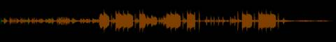
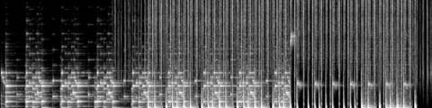
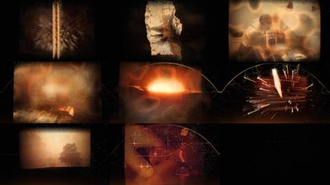
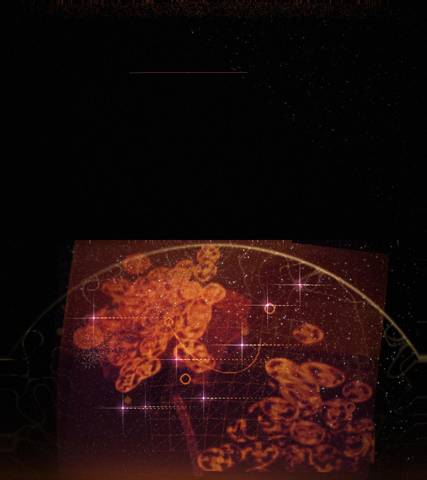
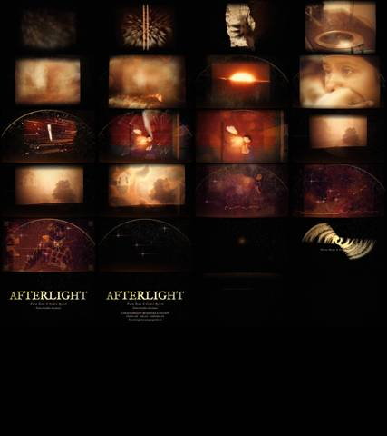

Afterlight / IV Trailer / AFL-10
IV · Trailer · AFL-10 of 21 · 1:17
Warm Dome
The note that produced it
“Make the cut to this song, animations, and get the good voices, better sound collage, blend, cut to the song … embers like above a campfire in wind or caustics at night with the Gaussian clouds, better blends and interpolation. See the vision: the video should feel seamless. Golden dome afterlight cut.”
Twelve transition plates for the song’s parts: embers in wind, night caustics, Gaussian clouds, the dome, the golden record.
What was made
The song is the bed and the archive leads in its open spaces. Pictures gather out of soft clouds under the one before; a dome of caustics breathes with the bass, a record turns in the break, glints release unevenly in the return.
Ducked song under each voice · tuned tails in B minor and D · plates as layers keyed to song sections
What came back
The note on this version, which produced AFL-11 Light Alone:
The animations don’t correspond and the words are “sort of meaningless.” Make it react to the beat, “no sense of anything but space and light and warmth,” led by better voices or a Kokoro script.
Images made while working: contact sheets, check frames, spectrograms, the stills compared before and after a fix. Tap one to see it full size.










No separate critic agent was run on this cut. The critique came from the director, in the notes on either side of it.
On the cut before
Cut it to this song, Warm Dome & Golden Record, with twelve plates for its parts: embers in wind, caustics at night, a golden dome. “Seamless.”
On this cut
The animations don’t correspond and the words are “sort of meaningless.” Make it react to the beat, “no sense of anything but space and light and warmth,” led by better voices or a Kokoro script.
Files
The scripts that made this version, as plain text.
- timeline5.py57 linesthe song’s sections and the plates keyed to them
- trailer5.py387 linescaustics, dome, record, glints
- score5.py123 linesthe song ducked under the voices, tuned tails
A film concept by Sosuke & Watson · CRASH LAB · PAELEO · CINEOSIS LAB